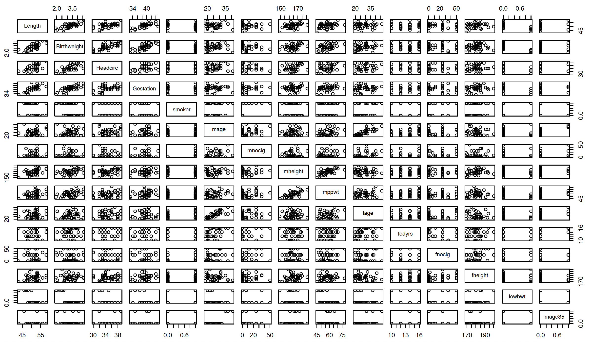
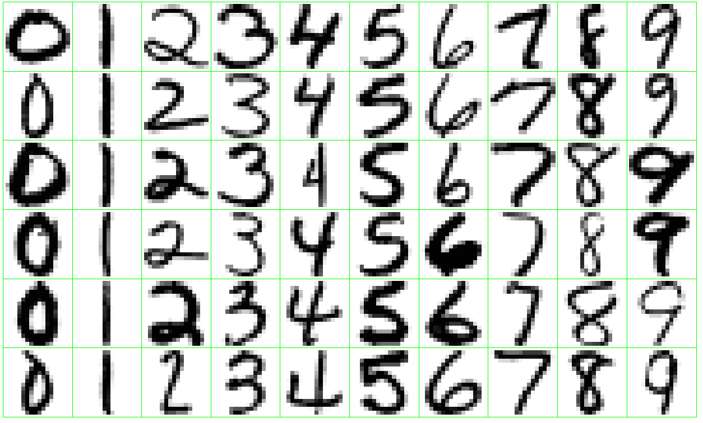
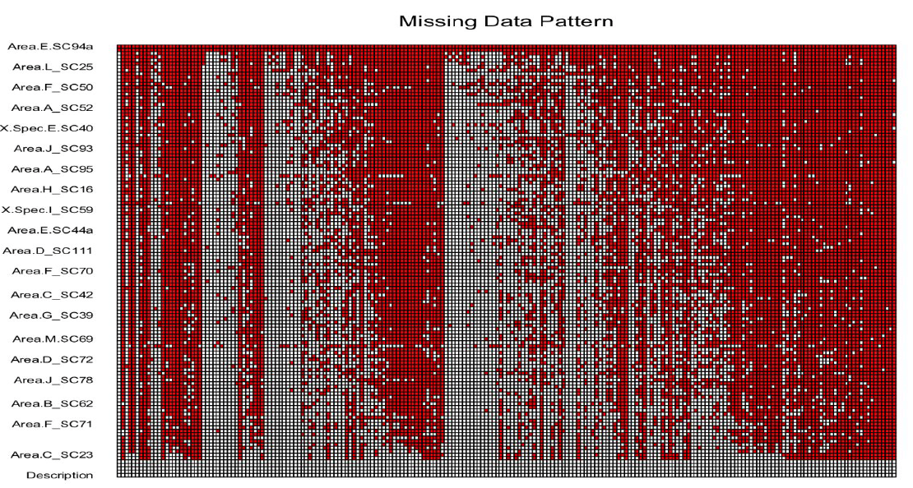

1.1 Examples of Statistical Learning Problems
Birthweight Data: A Regression Example
This dataset comes from a study whose goal is to predict the birth weight of a newborn from a collection of baby and parental characteristics (gestation length, length, head circumference, mother’s and father’s height, mother’s weight, parental smoking status, etc.). The study focuses particularly on babies born prematurely (before 40 weeks of gestation).
The scatterplot matrix below shows the pairwise relationships among the variables in the dataset:

Note that three of the predictors (smoker, lowbwt, and mage35) are categorical.
This is a classic example of a supervised regression problem and a natural setting in which a multiple linear regression (MLR) model can be considered. If the MLR model fits well and the key assumptions are reasonably satisfied, it can provide useful predictions of birth weight for new observations.
Trees and Shrubs Data: A Binary Classification Example
In this problem, the goal is to predict whether a woody plant common in the Black Forest region of southwestern Germany is a tree or a shrub (Lederer). A sample of the data is shown below:
| Name | Height | Diameter | GrowthRate | Longevity | Type |
|---|---|---|---|---|---|
| Silver Fir | 55.0 | 1.50 | 0.5 | 500 | Tree |
| European Beech | 40.0 | 1.00 | 0.5 | 200 | Tree |
| Common Hazel | 5.0 | 0.10 | 0.5 | 70 | Shrub |
| Red Raspberry | 1.5 | 0.01 | 0.4 | 10 | Shrub |
| European Spruce | 50.0 | 1.20 | 0.5 | 600 | Tree |
This is a binary classification problem in which we want to use a set of characteristics to predict the class label (tree or shrub).
Handwritten Digits: A Multiclass Classification Example
This is a classic multiclass classification problem in which the goal is to predict the handwritten digit \((0, \ldots, 9)\) appearing on a postal envelope, based on a 16 \(\times\) 16 eight-bit grayscale image (ESL). The practical challenge is to keep the error rate sufficiently low so that mail is not misdirected.

Proteomics Data: A Clustering Example
Proteomics is the large-scale study of proteins. Data of this type are typically generated through laboratory processes such as protein purification or mass spectrometry (a technique that measures the mass-to-charge ratio of ions).
The figure below shows an expression matrix for 437 proteins, of which only 101 are of primary interest (Romanova et al.). A common challenge with such data is the large amount of missing values (shown as grey pixels). The goal is to cluster the proteins into coherent groups for further biological analysis.

These examples illustrate the variety of problems that arise in statistical learning. The birthweight data is a typical supervised regression problem in which we aim to predict a quantitative outcome. The trees-and-shrubs data is a binary classification task, while the handwritten-digit data is a multiclass classification problem. Finally, the proteomics data is an unsupervised learning example whose goal is to uncover latent structure through clustering. Together they show how statistical learning methods can be applied across different types of outcomes and data structures, whether the aim is prediction or the discovery of patterns.